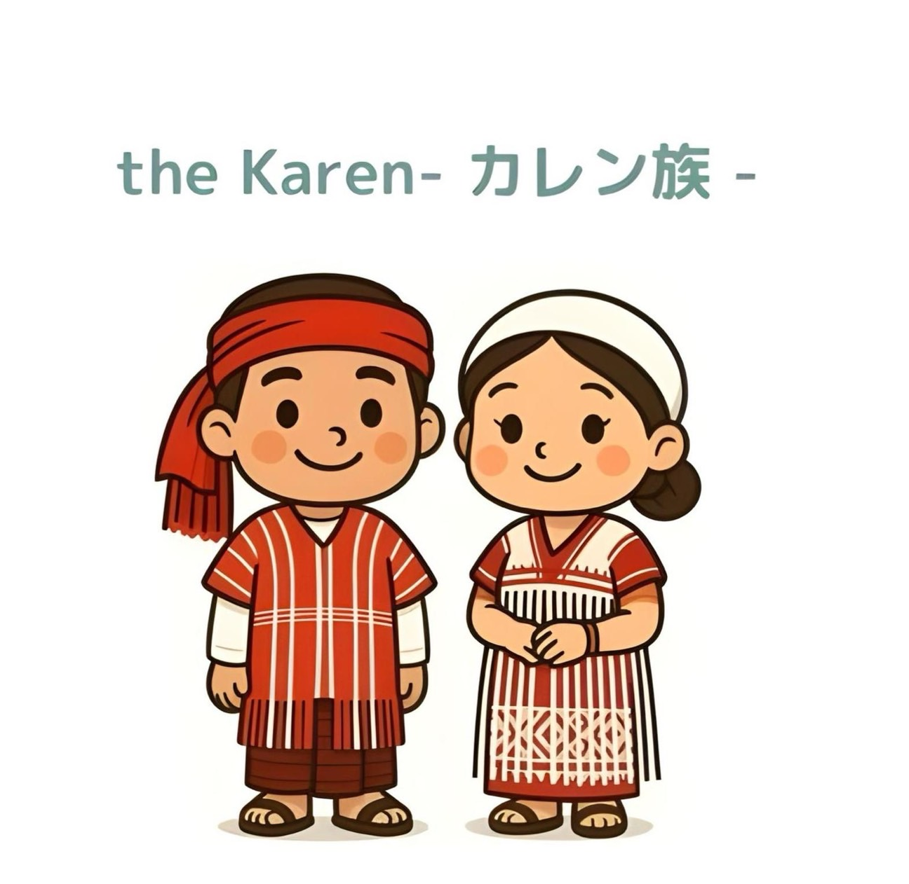
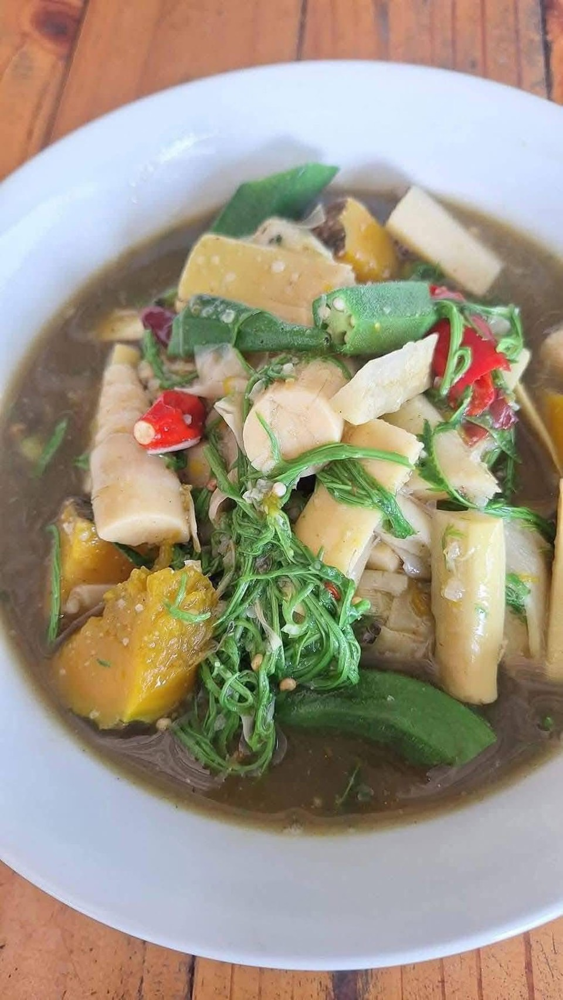
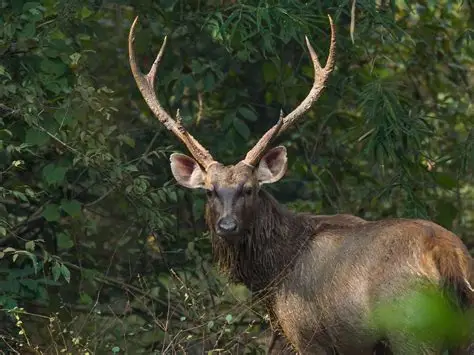
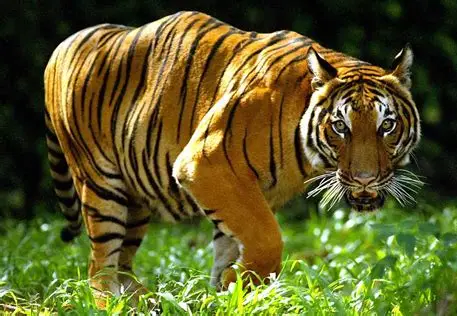

織物と竹工芸
カイン織りは、鮮やかな模様のチュニックやスカーフを生み出します。竹の家や道具は、伝統的な職人技を物語っています。
カイン族はミャンマーの主要な民族の一つで、主にカレン州とその周辺地域に居住しています。彼らは織物、竹の家、伝統舞踊、そして強い共同体精神で知られています。

カレン族には、スゴー族、ポー族、パオ族など、それぞれ独自の言語と伝統を持つ複数のサブグループが含まれます。農業、織物、漁業は彼らの日常生活において重要な役割を果たしています。
カイン族の伝統衣装は手織りのチュニックと縞模様で知られています。 男性はシンプルなデザインの長いチュニックとロンジーを着用し、 女性は袖なしのブラウスと縞模様のロンジーを着用します。 ビーズや鮮やかな色彩で装飾されることが多く、文化的誇りを表現しています。

カイン織りは、鮮やかな模様のチュニックやスカーフを生み出します。竹の家や道具は、伝統的な職人技を物語っています。
文化イベントでは音楽、ダンス、宗教儀式などが行われます。
石灰岩の山々と洞窟に囲まれた州都。
石灰岩の尖塔の上に建つユニークな仏塔。
仏教寺院と美しいボート出口を備えた大きな洞窟群。
新鮮なハーブ、軽い風味、お祝いの料理で知られる伝統的なカイン料理。

カレン地方およびその周辺で見られる野生生物（例）

